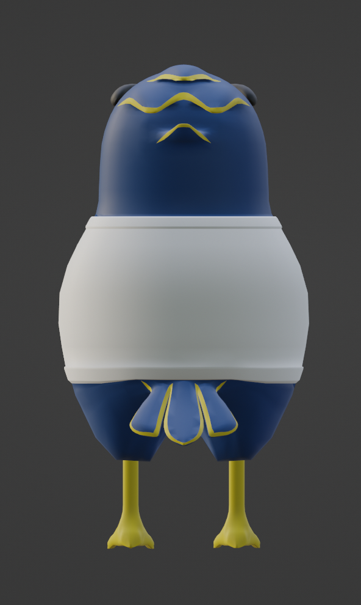

3D (Maya, Blender)
Motion
Unity (C#)
VR (Oculus Quest)
GROUP-WORK
Winter, 2022 (3 Months)
Welcomed space of UBC for any visiters!
This VR immersive experience introduces a reimagined Univerisity of British Columbia (UBC) as an interactive hub space that embodies the spirit of the UBC.
Created the various 3D elements from historical and iconic landmarks of UBC. Incorporated interactive paintball feature inspired by UBC's cultures.


Environment Design Goal:
We aimed to create a space that lets you experience "UBC and more." Designed as a dream-like, fantasy environment, it evokes the feeling of having dreamed of UBC.
To enhance the dream-like environment, we incorporated floating islands in the sky and combined historical landmarks with well-known parts of the UBC campus, all within a single space.


Created key UBC landmarks and assets for the VR space, including benches, waste bins, light poles, and iconic features like the Martha Piper Plaza fountain, UBC sign, totem poles, and clock tower.
Tools: Maya, Blender
- 
-

-

Final Design & Character Design Sheet
Character Design:
I designed the main player character, also serving as an NPC, to reimagine the UBC mascot, Thunderbird.
The character was created to embody a friendly image while staying true to the mascot’s identity.
I handled the design, rigging, and code implementation for player movement and walking animations.
Tools: Maya, Blender, Unity (C#)
The code implementation for player movements were based on Dinesh Punni and Valem Tutorials.


Paintball Effect Development:
The paintball feature lets users paint the environment by shooting paintballs, with a scorekeeping system that rewards points for paintballs landing on the UBC sign.
We used paintball colors to represent UBC faculties.
Contributed by implementing paintability for the environment and UBC sign, and coding the functionality for interaction.
The paintball feature allows the user to grab a paintball and use it to paint the environment.
Tools: Unity (C#)
This paint effect stemmed from on the creators of Mix and Jam, and TNTCProjects that recreated the Splatoon effect.